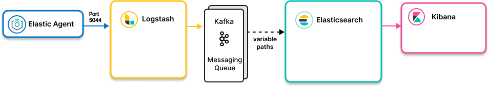

Elastic Agent to Elasticsearch with Kafka as middleware message queueedit

- Ingest models
-
Elastic Agent to Logstash to Kafka to Logstash to Elasticsearch: Kafka as middleware message queue.
Logstash reads data from Kafka and routes it to Elasticsearch clusters (and/or other destinations).Elastic Agent to Logstash to Kafka to Kafka ES Sink to Elasticsearch: Kafka as middleware message queue.
Kafka ES sink connector reads from Kafka and writes to Elasticsearch. - Use when
- You are standardizing on Kafka as middleware message queue between Elastic Agent and Elasticsearch
- Notes
- The transformation from raw data to Elastic Common Schema (ECS) and any other enrichment can be handled by Logstash as described in Elastic Agent to Logstash (for enrichment) to Elasticsearch.